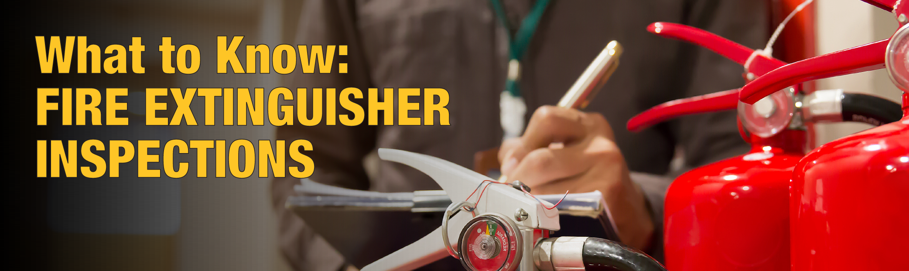

Inspection • Maintenance • Recharge • Same Day Service
Serving Restaurants, Offices, Stores, Warehouses & Commercial Buildings
We provide professional fire extinguisher inspection, maintenance, and recharge services in New York City. Our service is FDNY compliant and available for restaurants, offices, retail stores, warehouses, and commercial buildings.
Same day fire extinguisher inspection service available in NYC.

We serve Manhattan, Brooklyn, Queens, Bronx, and Staten Island.
我们提供纽约灭火器检查、维护、充装服务，服务餐厅、商铺、办公室、仓库和各类商业客户。
电话：646-201-6351
Call today for inspection, maintenance, recharge, or same day service.